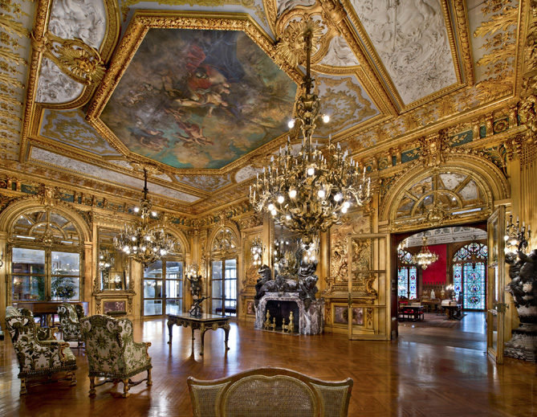
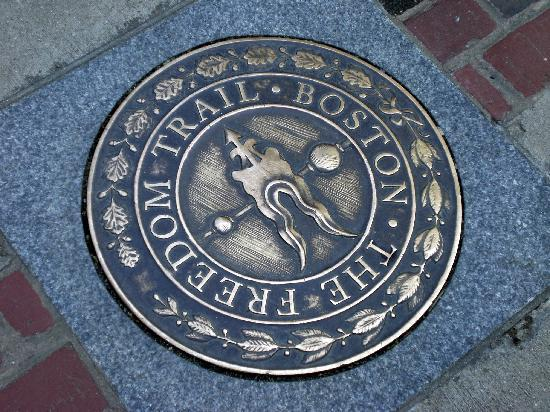

New England
Rhode Island
Newport Mansions

") The Preservation Society of Newport County, Rhode Island's largest cultural organization, preserves and protects the best of Newport County's architectural heritage. Its 11 historic properties and landscapes - seven of which are National Historic Landmarks - trace America's architectural and social development from the Colonial era through the Gilded Age. In keeping with its mission, the Society strives to offer its members and the public a comprehensive view of each property's architecture, interiors, landscapes and social history.
The Society is headquartered in a three-story Romanesque Revival mansion at 424 Bellevue Avenue, constructed in 1888 as a summer residence for William H. Osgood of New York. Its last private owner was Herbert Claiborne Pell, former U.S. Ambassador to Portugal and Hungary. After several incarnations as a school building, the property was purchased in 1992 by the Preservaton Society, which conducted an extensive restoration and renovation of the building for use as its administrative headquarters.
The Preservation Society of Newport County, Rhode Island's largest cultural organization, preserves and protects the best of Newport County's architectural heritage. Its 11 historic properties and landscapes - seven of which are National Historic Landmarks - trace America's architectural and social development from the Colonial era through the Gilded Age. In keeping with its mission, the Society strives to offer its members and the public a comprehensive view of each property's architecture, interiors, landscapes and social history.
The Society is headquartered in a three-story Romanesque Revival mansion at 424 Bellevue Avenue, constructed in 1888 as a summer residence for William H. Osgood of New York. Its last private owner was Herbert Claiborne Pell, former U.S. Ambassador to Portugal and Hungary. After several incarnations as a school building, the property was purchased in 1992 by the Preservaton Society, which conducted an extensive restoration and renovation of the building for use as its administrative headquarters.
Slater Mill
In 1793, the firm of Almy, Brown, and Slater hired local artisans and laborers to construct a wooden building suitable for manufacturing cotton thread by waterpower. Slater Mill became the first successful cotton-spinning factory in the United States. It was dedicated exclusively to the production of cotton thread until 1829, and then was continuously occupied until 1921 by various owners and renters. Through the years, Slater Mill supported many types of production and manufacture, including tools for the jewelry industry, coffin trimmings, cardboard manufacture, and bicycle sales.
In 1921, after the last private owner ceased operations, a group of local businessmen with ties to the textile industry organized the Old Slater Mill Association to purchase, restore and preserve the Slater Mill; recognized then, and now, as the “Birthplace of the American Industrial Revolution.” Restoration of the structure was completed in 1925. With the support of 62 founders; including industrial giants like Henry Ford, Walter Chrysler, and Harvey Firestone Slater Mill became one of the first operating industrial museums in the United States.
Slater Mill museum soon housed an impressive array of industrial artifacts. By the early 1950s, the museum was opened on a regular basis. In 1966, Slater Mill was designated a National Historic Landmark by the National Park Service. The Sylvanus Brown House was relocated to the site in 1962, and restored along with the Wilkinson Millin the 1970s. Additional acreage was purchased, and the campus designated the Slater Mill Historic Site, and given National Historic Landmark District status.
Today, the Slater Mill campus includes three historic structures, a gift shop, exhibition gallery space, the Jencks Education Conference Center and rental hall, and the Hodgson Rotary Park, open to the community for passive recreation and special events. Slater Mill is open March through November for museum tours, and by appointment during the winter months.
Massachusetts
Freedom Trail

Boston's official Freedom Trail Tours take you to places where history was made! Walk Into History along the iconic Freedom Trail; the 2.5 mile red line leading to nationally significant historic sites, each one an authentic treasure. Preserved and dedicated by the citizens of Boston in 1951, the Freedom Trail is a unique collection of museums, churches, meeting houses, burying grounds, parks, a ship, and historic markers that tell the story of the American Revolution and beyond. Led by 18th century costumed Freedom Trail Players, tours feature tales of high treason, mob agitations, revolutionary actions, and partisan fights of the American Revolution. Discover the rich history of the American Revolution, as it began in Boston, where every step tells a story.
Boston's official Freedom Trail Tours take you to places where history was made! Walk Into History along the iconic Freedom Trail; the 2.5 mile red line leading to nationally significant historic sites, each one an authentic treasure. Preserved and dedicated by the citizens of Boston in 1951, the Freedom Trail is a unique collection of museums, churches, meeting houses, burying grounds, parks, a ship, and historic markers that tell the story of the American Revolution and beyond. Led by 18th century costumed Freedom Trail Players, tours feature tales of high treason, mob agitations, revolutionary actions, and partisan fights of the American Revolution. Discover the rich history of the American Revolution, as it began in Boston, where every step tells a story.
More information about the Freedom Trail sites can be found at "Official Sites on the Trail" on the left.
Witch House
")
") The Jonathan Corwin House in Salem, Massachusetts, USA known as The Witch House; was the home of Judge Jonathan Corwin (1640:1718) and is the only structure still standing with direct ties to the Salem witch trials of 1692. It was bought by Judge Corwin in 1675, when he was 24 years old, and he lived there for more than forty years. Corwin is buried in the nearby Broad Street Cemetery. The house remained in the Corwin family until the mid19th century. The house is located at 310 Essex Street, at the cross streets of North & Summer in the Chestnut Street District of Salem.
The Jonathan Corwin House in Salem, Massachusetts, USA known as The Witch House; was the home of Judge Jonathan Corwin (1640:1718) and is the only structure still standing with direct ties to the Salem witch trials of 1692. It was bought by Judge Corwin in 1675, when he was 24 years old, and he lived there for more than forty years. Corwin is buried in the nearby Broad Street Cemetery. The house remained in the Corwin family until the mid19th century. The house is located at 310 Essex Street, at the cross streets of North & Summer in the Chestnut Street District of Salem.
Plimoth Plantation
") Plimoth Plantation, founded in 1947, is a living history museum in Plymouth, Massachusetts, USA, that exhibits the original settlement of the Plymouth Colony established in the 17th century by English colonists, some of whom later became known as Pilgrims. They were among the first people who emigrated to America to avoid religious persecution and to seek religious separation from the Church of England. It is a notforprofit museum supported by admissions, contributions, grants and volunteers.
Plimoth Plantation, founded in 1947, is a living history museum in Plymouth, Massachusetts, USA, that exhibits the original settlement of the Plymouth Colony established in the 17th century by English colonists, some of whom later became known as Pilgrims. They were among the first people who emigrated to America to avoid religious persecution and to seek religious separation from the Church of England. It is a notforprofit museum supported by admissions, contributions, grants and volunteers.
The recreations are sourced from a wide variety of first and second records, accounts, articles and period paintings and artifacts, and the museum conducts ongoing research and scholarship, including historical archaeological excavation and curation locally and abroad.
In the 1627 English Village section of the museum, interpreters have been trained to speak, act and dress appropriately for the period. At Plimoth Plantation they are called historical interpreters, and they interact with their 'strange visitors' (i.e. the modern general public) in the first person, answering questions, discussing their lives and viewpoints and participating in tasks such as cooking, planting, blacksmithing and animal husbandry. The 1627 English Village loosely follows a time line, chronologically representing the calendar year 1627 from late March through November (the months the museum is open), depicting day-to-day life and seasonal activities as well as featuring some key historical events such as funerals and special celebrations.
Harvard University

") Harvard University is a private Ivy League research university in Cambridge, Massachusetts, established in 1636. Its history, influence and wealth have made it one of the most prestigious universities in the world.
Established originally by the Massachusetts legislature and soon thereafter named for John Harvard (its first benefactor), Harvard is the United States' oldest institution of higher learning,and the Harvard Corporation (formally, the President and Fellows of Harvard College) is its first chartered corporation. Although never formally affiliated with any denomination, the early College primarily trained Congregationalist and Unitarian clergy. Its curriculum and student body were gradually secularized during the 18th century, and by the 19th century Harvard had emerged as the central cultural establishment among Boston elites. Following the American Civil War, President Charles W. Eliot's long tenure (1869:1909) transformed the college and affiliated professional schools into a modern research university; Harvard was a founding member of the Association of American Universities in 1900.James Bryant Conant led the university through the Great Depression and World War II and began to reform the curriculum and liberalize admissions after the war. The undergraduate college became coeducational after its 1977 merger with Radcliffe College.
Harvard University is a private Ivy League research university in Cambridge, Massachusetts, established in 1636. Its history, influence and wealth have made it one of the most prestigious universities in the world.
Established originally by the Massachusetts legislature and soon thereafter named for John Harvard (its first benefactor), Harvard is the United States' oldest institution of higher learning,and the Harvard Corporation (formally, the President and Fellows of Harvard College) is its first chartered corporation. Although never formally affiliated with any denomination, the early College primarily trained Congregationalist and Unitarian clergy. Its curriculum and student body were gradually secularized during the 18th century, and by the 19th century Harvard had emerged as the central cultural establishment among Boston elites. Following the American Civil War, President Charles W. Eliot's long tenure (1869:1909) transformed the college and affiliated professional schools into a modern research university; Harvard was a founding member of the Association of American Universities in 1900.James Bryant Conant led the university through the Great Depression and World War II and began to reform the curriculum and liberalize admissions after the war. The undergraduate college became coeducational after its 1977 merger with Radcliffe College.
The University is organized into eleven separate academic units ten faculties and the Radcliffe Institute for Advanced Study with campuses throughout the Boston metropolitan area: its 209-acre (85 ha) main campus is centered on Harvard Yard in Cambridge, approximately 3 miles (5 km) northwest of Boston; the business school and athletics facilities, including Harvard Stadium, are located across the Charles River in the Allston neighborhood of Boston and the medical, dental, and public health schools are in the Longwood Medical Area Harvard has the largest financial endowment of any academic institution in the world, standing at $36.4 billion.
Harvard is a large, highly residential research university. The nominal cost of attendance is high, but the University's large endowment allows it to offer generous financial aid packages. It operates several arts, cultural, and scientific museums, alongside the Harvard Library, which is the world's largest academic and private library system, comprising 79 individual libraries with over 18 million volumes. Harvard's alumni include eight U.S. presidents, several foreign heads of state, 62 living billionaires, 335 Rhodes Scholars, and 242 Marshall Scholars. To date, some 150 Nobel laureates and 5 Fields Medalists (when awarded) have been affiliated as students, faculty, or staff.
Connecticut
The Mashantucket Pequot Museum & Research Center
The museum's permanent collection includes artifacts of Native American peoples of eastern North America from the 16th century to the 20th century, as well as commissioned art works and traditional crafts by modern Native Americans. A series of interactive exhibits and life-size threedimensional dioramas depicts the lifeways and history of the Mashantucket Pequot and their ancestors from the last glacial period through modern times. One highlight is a 22,000 sq ft (2,000 m2) walk-through re-creation of a coastal Pequot village around the year 1550, shortly before the first contact with Europeans. The village is populated by 51 lifesize figures of Indians engaged in activities such as building wigwams, sharpening arrows, and weaving mats. A 600 ft (180 m) photomural of an oakhickory forest surrounds the village.
A 185 ft (56 m) observation tower allows visitors to view the Mashantucket Pequot reservation, the casino, and surrounding areas of southeastern Connecticut.
The museum reports having about 250,000 visitors each year A reviewer for Connecticut Magazine described the museum as "rival[ing] anything in the nation" and commented that the Pequot village reconstruction and other dioramas "almost put EPCOT to shame".